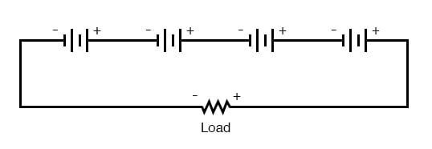
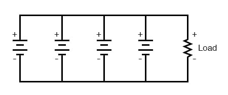
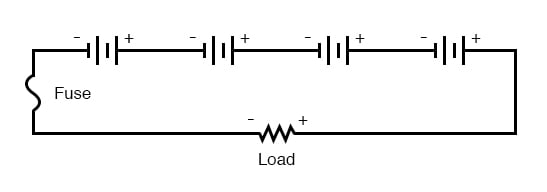
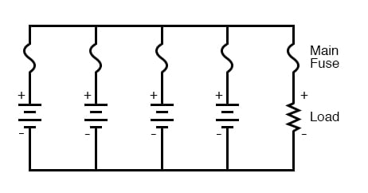

When connecting batteries together to form larger “banks” (a battery of batteries?), the constituent batteries must be matched to each other so as to not cause problems.
First we will consider connecting batteries in series for greater voltage:

We know that the current is equal at all points in a series circuit, so whatever amount of current there is in any one of the series-connected batteries must be the same for all the others as well. For this reason, each battery must have the same amp-hour rating, or else some of the batteries will become depleted sooner than others, compromising the capacity of the whole bank. Please note that the total amp-hour capacity of this series battery bank is not affected by the number of batteries.
Next, we will consider connecting batteries in parallel for greater current capacity (lower internal resistance), or greater amp-hour capacity:

We know that the voltage is equal across all branches of a parallel circuit, so we must be sure that these batteries are of equal voltage. If not, we will have relatively large currents circulating from one battery through another, the higher-voltage batteries overpowering the lower-voltage batteries. This is not good.
On this same theme, we must be sure that any overcurrent protection (circuit breakers or fuses) are installed in such a way as to be effective. For our series battery bank, one fuse will suffice to protect the wiring from excessive current, since any break in a series circuit stops current through all parts of the circuit:

With a parallel battery bank, one fuse is adequate for protecting the wiring against load overcurrent (between the parallel-connected batteries and the load), but we have other concerns to protect against as well. Batteries have been known to internally short-circuit, due to electrode separator failure, causing a problem, not unlike that where batteries of unequal voltage are connected in parallel: the good batteries will overpower the failed (lower voltage) battery, causing relatively large currents within the batteries’ connecting wires. To guard against this eventuality, we should protect each and every battery against overcurrent with individual battery fuses, in addition to the load fuse:

When dealing with secondary-cell batteries, particular attention must be paid to the method and timing of charging. Different types and construction of batteries have different charging needs, and the manufacturer’s recommendations are probably the best guide to follow when designing or maintaining a system. Two distinct concerns of battery charging are cycling and overcharging. Cycling refers to the process of charging a battery to a “full” condition and then discharging it to a lower state. All batteries have a finite (limited) cycle life, and the allowable “depth” of the cycle (how far it should be discharged at any time) varies from design to design. Overcharging is the condition where the current continues to be forced back through a secondary cell beyond the point where the cell has reached full charge. With lead-acid cells, in particular, overcharging leads to electrolysis of the water (“boiling” the water out of the battery) and shortened life.
Any battery containing water in the electrolyte is subject to the production of hydrogen gas due to electrolysis. This is especially true for overcharged lead-acid cells, but not exclusive to that type. Hydrogen is an extremely flammable gas (especially in the presence of free oxygen created by the same electrolysis process), odorless and colorless. Such batteries pose an explosion threat even under normal operating conditions and must be treated with respect. The author has been a firsthand witness to a lead-acid battery explosion, where a spark created by the removal of a battery charger (small DC power supply) from an automotive battery ignited hydrogen gas within the battery case, blowing the top off the battery and splashing sulfuric acid everywhere. This occurred in a high school automotive shop, no less. If it were not for all the students nearby wearing safety glasses and buttoned-collar overalls, the significant injury could have occurred.
When connecting and disconnecting charging equipment to a battery, always make the last connection (or first disconnection) at a location away from the battery itself (such as at a point on one of the battery cables, at least a foot away from the battery), so that any resultant spark has little or no chance of igniting hydrogen gas.
In large, permanently installed battery banks, batteries are equipped with vent caps above each cell, and hydrogen gas is vented outside of the battery room through hoods immediately over the batteries. Hydrogen gas is very light and rises quickly. The greatest danger is when it is allowed to accumulate in an area, awaiting ignition.
More modern lead-acid battery designs are sealed, fabricated to re-combine the electrolyzed hydrogen and oxygen back into the water, inside the battery case itself. Adequate ventilation might still be a good idea, just in case a battery were to develop a leak.
REVIEW: